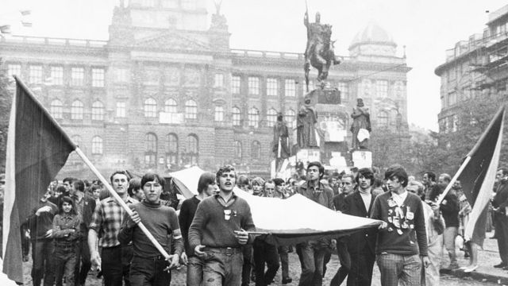

Los tanques soviéticos abrieron el camino cuando más de 200,000 tropas del Pacto de Varsovia marcharon a la capital checoslovaca durante la noche del 20 al 21 de agosto de 1968, la Unión Soviética temía la reforma democrática iniciada por el gobierno de Alexander Dubcek. Hoy puede afirmarse que con su intervención, Leonid Brezhnev perdió la última ocasión de salvar la experiencia comunista. “El experimento Checoslovaco la tentativa más osada de combinar el comunismo con la democracia había fracasado.” (Viento del Este, 2016, 13m40s).
¿Cuál es la política definida en el mes de enero?
Para la mayoría de los ciudadanos checoslovacos, se trata de la ruptura con el pasado estalinista, pero también de la consolidación de las acciones iniciadas y parcialmente realizadas durante el primer semestre. Ahora bien, desde la firma de los "acuerdos" de Moscú fue necesario anular parte de las decisiones ya tomadas.
Preocupados por mantener la confianza de sus compatriotas, los dirigentes señalaron que esas restricciones eran temporales. Sin embargo, existe la sensación de que los representantes del partido y el gobierno son sinceros cuando afirman que estas medidas son impuestas por las circunstancias y que retomarán el camino en cuanto sus aliados del campo socialista estén mejor informados o sean menos timoratos.
Primer tema de discusión: la libertad de prensa. Contrariamente a lo que suele creerse, esa libertad no fue un fenómeno generado de forma totalmente espontánea en enero de 1968. En tiempos de Novotn, escritores y periodistas libraban una lucha a veces coronada de éxitos contra la censura. No hay que olvidar las sanciones infligidas a fines de 1967 a algunos escritores o incluso el proceso intentado contra Edvard Benes o la confiscación del semanario Literarni Listy.
A partir de enero, los escritores pudieron finalmente expresar en voz alta lo que trataban de sugerir tomando infinitos recaudos. Sin embargo, las normas represivas estaban todavía vigentes, los instrumentos de coerción seguían existiendo. Pero las leyes ya no se aplicaban y los censores se negaban a trabajar. En consecuencia, la prensa tuvo una libertad casi total que carecía aún de sustento legal.
Aun cuando las presiones externas eran cada vez más fuertes, el gobierno aprobaba, el 26 de junio, la ley que suprimía la censura. La libertad conquistada seis meses atrás tenía finalmente su estatuto.
Consecuencia de esa libertad: algunos autores defendían tesis que a los "ortodoxos" les parecían realmente escandalosas. Un tema llama la atención ¿Cuál es el rol del partido? El equipo de Dubcek reconocía una autonomía al gobierno, al Parlamento, diversas asociaciones como los sindicatos, pero sin quitarle al partido su función de guía supremo.
La idea de aquellos que preconizaban la creación de un segundo partido -comunista o socialista- que aceptase sin reserva alguna los principios del régimen, pero fuese independiente con respecto al Partido Comunista existente. De esta manera, se habría introducido en la vida política un factor de emulación sin asumir el riesgo de una restauración del capitalismo.
El 24 de mayo, el ministro del Interior precisó que no aceptaría ninguna solicitud de inscripción y que la actividad de las organizaciones no registradas se consideraría ilegal. El nuevo poder deseaba ciertamente incrementar la actividad del Frente Nacional y los partidos o grupos que componían este Frente. Pero, en definitiva, sólo estaban autorizados los movimientos que aceptaban, tal como sucedía con el Frente Nacional, la autoridad suprema del Partido Comunista.
En consecuencia, adoptando las medidas de “normalización" exigidas por el ocupante, el poder dio marcha atrás en lo que respecta a la prensa, y no realizó ningún cambio en el estatuto de las asociaciones. Las decisiones votadas en septiembre no hacen más que confirmar lo que se había anunciado en el mes de mayo.
“Se trataba de una libertad espasmódica, de una libertad como desatada por una fiebre, lo que quiero decir es que no era una libertad realmente cómoda.” (Viento del Este, 2016, 04m42s).
DW History and Culture. (14 de agosto de 2022). The end of the Prague Spring Youtube. Ver
Viento del Este. (12 de abril de 2016). La URSS invade Checoslovaquia. 1968 La Primavera de Praga Youtube. Ver
Bibliografía
Le Monde Diplomatique (2018). Explorador Especial 1968.
Artículos:
“Esa primavera que asustó a los soviéticos” Bernard Féron (p.25-27).